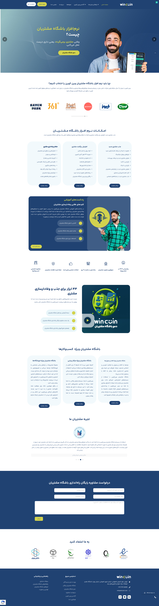

Wincoin Asia
Built the WooCommerce plugin that distributes Wincoin's customer-loyalty SaaS across client stores — syncing orders to Wincoin's API and applying discounts and wallet balances at checkout.
Visit wincoin.asia →
Built the WooCommerce plugin that distributes Wincoin's customer-loyalty SaaS across client stores — syncing orders to Wincoin's API and applying discounts and wallet balances at checkout.
Visit wincoin.asia →
Context
Wincoin runs a customer-loyalty SaaS — but the loyalty experience itself lives inside their merchants' WooCommerce stores. The product question was: how do you let any WooCommerce store join the Wincoin network without each one needing custom development? I built the multi-store WooCommerce plugin that solves that — a single installable bundle that authenticates with Wincoin's API, syncs orders, and applies loyalty discounts and wallet balances at checkout.
The plugin is distributed to all of Wincoin's client stores. The engagement is ongoing — 2.5+ years and counting.
Stack